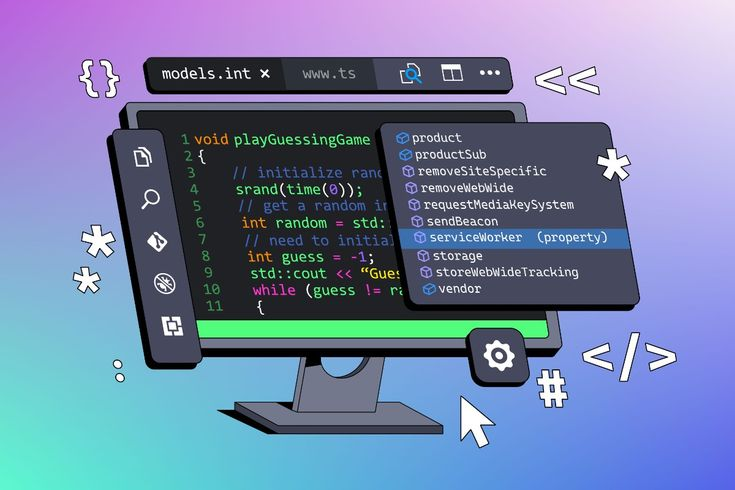
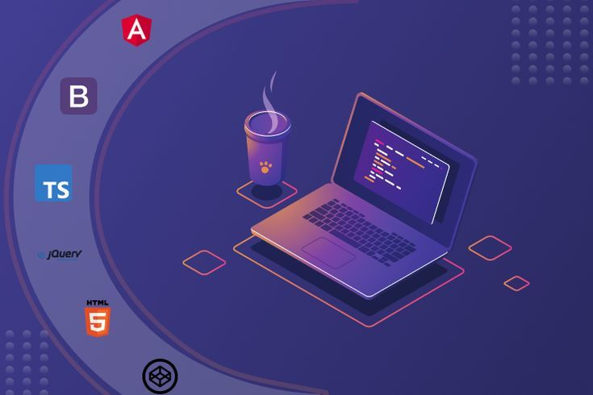

Mis Proyectos
ForceTech
Sistema de gestión administrativa para gimnasios bajo el marco SCRUM. Control de usuarios, membresías y horarios.

Inventory SyncSistema de inventario colaborativo enfocado en la gestión de stock y sincronización de datos con Git.

Gestor CulturalAdministrador con persistencia en JSON. Manejo avanzado de excepciones y validación de datos técnicos.
SOC Analyzer
Script de automatización para análisis de logs y detección de patrones sospechosos para respuesta ante incidentes.
 Web Portafolio
Web Portafolio
Interfaz responsiva con animaciones CSS complejas y efectos neón para una marca personal profesional.
 GitHub Profile
GitHub Profile
Centralización de trayectoria académica en la USAC y certificaciones en IA y Seguridad Informática.